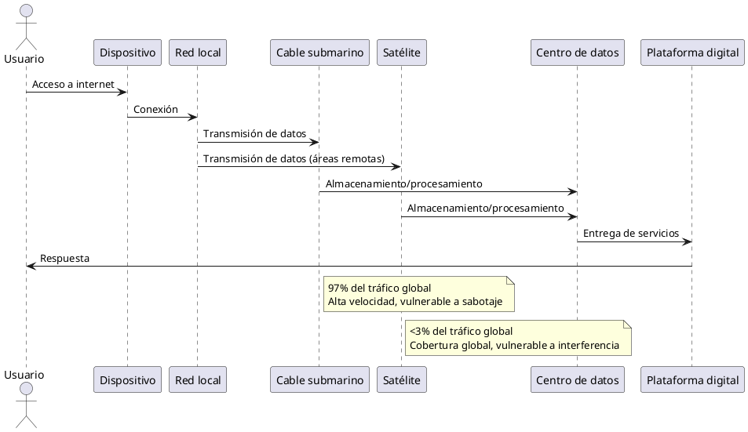
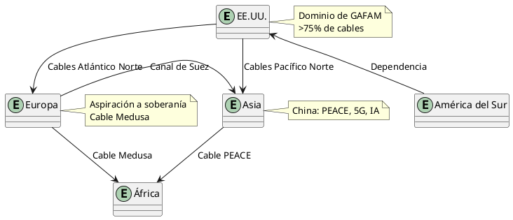
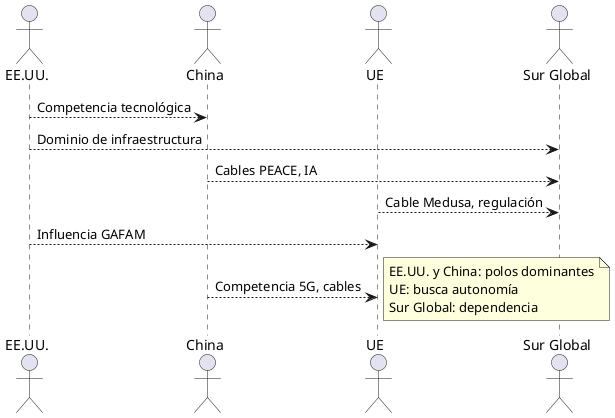

Geopolítica de los datos: ¿Quién controla la infraestructura digital
Geopolítica de los datos: ¿Quién controla la infraestructura digital mundial?
En la era digital, los datos se han convertido en el recurso más valioso del mundo, superando incluso al petróleo en términos de impacto económico y estratégico. La infraestructura que permite el flujo de estos datos —cables submarinos, satélites, centros de datos y plataformas digitales— es el campo de batalla de una nueva forma de geopolítica. Esta lucha no se libra con armas convencionales, sino con el control de las arterias digitales que sostienen la economía global, la seguridad nacional y la soberanía tecnológica. Este artículo explora quién controla esta infraestructura crítica, cómo la soberanía tecnológica moldea las dinámicas de poder y las implicaciones geoestratégicas de esta competencia, con un enfoque en cables submarinos y satélites. Se basa en fuentes documentales confiables de sitios .org y utiliza tablas y diagramas en PlantUML para ilustrar los conceptos clave.
La infraestructura digital: El backbone de la economía global
La infraestructura digital mundial, que transporta el 99% del tráfico global de datos, es un sistema complejo que incluye cables submarinos de fibra óptica, satélites de órbita baja, centros de datos y redes 5G. Según el libro La red global de cables submarinos: geopolítica y seguridad de una infraestructura crítica publicado por Aranzadi LaLey, los cables submarinos transportan el 97% de las comunicaciones internacionales, incluyendo 10 billones de dólares en transacciones financieras diarias. Los satélites, aunque representan una fracción menor del tráfico, son cada vez más relevantes con proyectos como Starlink de SpaceX, que busca proporcionar conectividad global.
Tabla 1: Comparación de cables submarinos y satélites en la infraestructura digital
| Infraestructura | Porcentaje del tráfico global | Ventajas | Vulnerabilidades | Actores principales |
|---|---|---|---|---|
| Cables submarinos | 97% | Alta velocidad, gran capacidad | Sabotaje físico, espionaje | GAFAM, Huawei, gobiernos (EE.UU., China) |
| Satélites | <3% | Cobertura global, acceso remoto | Interferencia, dependencia de órbita | SpaceX (Starlink), OneWeb, China |
Diagrama 1: Flujo de datos en la infraestructura digital global

Soberanía tecnológica: Redefiniendo el poder
La soberanía tecnológica se define como la capacidad de un país o comunidad para controlar su infraestructura tecnológica y datos, alineándolos con sus leyes, necesidades e intereses. Este concepto, que se superpone con la soberanía de datos, implica desarrollar capacidades locales, proteger derechos digitales y reducir la dependencia de tecnologías extranjeras. Sin embargo, la concentración de la infraestructura digital en manos de unas pocas corporaciones transnacionales y potencias estatales plantea desafíos significativos.
El dominio de las Big Tech
Empresas como Google, Amazon, Facebook, Apple y Microsoft (GAFAM) controlan más del 75% de los cables submarinos de comunicaciones, gracias a inversiones masivas y flotas especializadas. Este dominio les otorga un poder sin precedentes para influir en flujos de datos y, por extensión, en políticas nacionales. Por ejemplo, el veto a TikTok en EE.UU. en 2025 refleja cómo los datos se consideran armas geopolíticas, con el objetivo de limitar la influencia china en el ciberespacio.
China y la arquitectura digital propia
China ha emergido como un actor central en la geopolítica de los datos, apostando por una arquitectura digital propia que incluye infraestructura, plataformas y normativas. Según un informe del National Bureau of Asian Research, el modelo chino, respaldado por inversiones estatales y académicas, prioriza el acceso amplio y el uso responsable de tecnologías como la inteligencia artificial (IA), ejemplificado por el modelo DeepSeek-R1. Proyectos como el cable PEACE (Pakistan and East Africa Connecting Europe) refuerzan su influencia en el Sur Global.
La Unión Europea y la búsqueda de autonomía
La Unión Europea (UE) aspira a convertirse en una potencia digital soberana, pero carece de una estrategia integral. Según el European Council on Foreign Relations, la UE enfrenta el riesgo de quedar atrapada en la competencia entre EE.UU. y China si no desarrolla capacidades digitales propias. Iniciativas como el cable Medusa, financiado parcialmente por el Banco Europeo de Inversiones, buscan mejorar la conectividad entre Europa y el norte de África, promoviendo desarrollo económico y resiliencia digital.
Tabla 2: Actores clave en la soberanía tecnológica
| Actor | Estrategia principal | Infraestructura controlada | Influencia geopolítica |
|---|---|---|---|
| EE.UU. (GAFAM) | Dominio de cables y centros de datos | Cables submarinos, nube | Global, centrada en mercados |
| China | Arquitectura digital propia, cables como PEACE | Cables, IA, 5G | Sur Global, control estatal |
| UE | Regulación, proyectos como Medusa | Cables regionales, centros de datos | Mediterráneo, aspiración a autonomía |
Cables submarinos: Las arterias de la era digital
Los cables submarinos son la columna vertebral de internet, transportando datos a través de 1.2 millones de kilómetros de fibra óptica. Sin embargo, su distribución es desigual, con una concentración en el Atlántico Norte, el Pacífico Norte y la ruta Europa-Asia a través del Canal de Suez. Esta geografía refleja el dominio de EE.UU. y la dependencia de regiones como América del Sur y África de infraestructuras extranjeras.
Vulnerabilidades y riesgos
Los cables submarinos son vulnerables a sabotajes, como el caso del gasoducto Nord Stream en 2022, que destacó la fragilidad de las infraestructuras submarinas. Además, incidentes como el corte accidental de un cable en Georgia en 2011, que dejó a Armenia sin internet durante 12 horas, muestran los riesgos de fallos no intencionales. Los puntos de entrada y las rutas de los cables son objetivos estratégicos, ya que los estados pueden obstruir su construcción por motivos políticos.
Diagrama 2: Red global de cables submarinos

Satélites: El nuevo frente geoestratégico
Aunque los satélites representan menos del 3% del tráfico de datos, su importancia crece con constelaciones como Starlink, que ofrece conectividad global en áreas remotas. Estas redes, controladas por actores como Elon Musk, plantean preguntas sobre la soberanía, ya que una sola empresa puede desactivar infraestructuras críticas, como se vio en la amenaza de retirar Starlink de Ucrania en 2022.
Competencia en el espacio
China y EE.UU. lideran la carrera por las constelaciones de órbita baja, mientras que la UE y otras regiones quedan rezagadas. Los satélites son vulnerables a interferencias y ataques cibernéticos, lo que los convierte en un frente clave en la geopolítica digital. Además, el control de estas redes permite a las potencias influir en la conectividad de regiones dependientes, como África Subsahariana.
Implicaciones geoestratégicas
La geopolítica de los datos redefine el poder global al transformar la infraestructura digital en un instrumento de influencia. Los principales impactos son:
- Concentración de poder: Las Big Tech y potencias como EE.UU. y China dominan la infraestructura, creando un "imperio de la vigilancia" que controla flujos de datos y erosiona la soberanía de otros estados.[](https://www.alainet.org/es/articulo/184284)
- Asimetrías globales: Regiones como América Latina y África dependen de infraestructuras extranjeras, limitando su autonomía tecnológica.[](https://www.alainet.org/es/articulo/194455)
- Riesgos de seguridad: La vulnerabilidad de cables y satélites plantea riesgos de sabotaje y espionaje, como se vio en el caso de los buceadores que cortaron el cable SEA ME WE 4 en Egipto.[](https://lab.cccb.org/es/la-geopolitica-de-internet/)
- Regulación y cooperación: La UE busca contrarrestar la hegemonía de EE.UU. y China mediante regulaciones como la Ley de Protección de Datos Personales de China (PIPL) y el "efecto Bruselas".
\
Diagrama 3: Dinámicas de poder en la geopolítica de los datos

Conclusión
La geopolítica de los datos es una lucha por el control de la infraestructura digital que define la economía y la seguridad del siglo XXI. Los cables submarinos y los satélites son las arterias y los nodos de esta red global, pero su control está concentrado en manos de unas pocas potencias y corporaciones. La soberanía tecnológica emerge como una respuesta a esta concentración, con actores como la UE y China buscando autonomía frente al dominio de las Big Tech y EE.UU. Sin embargo, las asimetrías globales y las vulnerabilidades de la infraestructura plantean desafíos significativos. Para regiones como América Latina y África, desarrollar capacidades locales y participar en la regulación global será crucial para evitar quedar relegadas en este nuevo orden mundial.
Referencias
- Revista Ejércitos. (2023). Geopolítica de los cables submarinos de comunicaciones I. www.revistaejercitos.com[](https://www.revistaejercitos.com/articulos/geopolitica-de-los-cables-submarinos-de-comunicaciones-i-su-importancia-para-espana/)
- CCCB LAB. (2013). La geopolítica de Internet. lab.cccb.org[](https://lab.cccb.org/es/la-geopolitica-de-internet/)
- Eulixe. (2021). Los cables submarinos de Internet, el nuevo foco de la competencia geopolítica. www.eulixe.com[](https://www.eulixe.com/articulo/reportajes/cables-submarinos-internet-nuevo-foco-creciente-competencia-geopolitica/20210517020652023342.html)
- Global Affairs, Universidad de Navarra. (2025). Cable Medusa: Infraestructura digital y geopolítica en el Mediterráneo. www.unav.edu[](https://www.unav.edu/web/global-affairs/cable-medusa-infraestructura-digital-y-geopolitica-en-el-mediterraneo)
- El Grand Continent. (2022). Tecnopolítica del ciberespacio. legrandcontinent.eu[](https://legrandcontinent.eu/es/2022/09/16/tecnopolitica-del-ciberespacio/)
- Wikipedia. (2014). Soberanía tecnológica. es.m.wikipedia.org[](https://es.m.wikipedia.org/wiki/Soberan%25C3%25ADa_tecnol%25C3%25B3gica)
- Aranzadi LaLey. (s.f.). La red global de cables submarinos: geopolítica y seguridad de una infraestructura crítica. tienda.aranzadilaley.es[](https://tienda.aranzadilaley.es/la-red-global-de-cables-submarinos-geopolitica-y-seguridad-de-una-infraestructura-critica)
- Alainet. (2017). Geopolítica de la seguridad: las disputas geopolíticas del ciberespacio. www.alainet.org[](https://www.alainet.org/es/articulo/184284)
- El Confidencial. (2021). El flanco geopolítico más frágil de la Unión Europea está en el fondo del océano. www.elconfidencial.com[](https://www.elconfidencial.com/mundo/2021-05-15/geopolitica-union-europea-cables-submarinos_3079212/)
- Alainet. (2018). Geopolítica de la inteligencia artificial e integración digital. www.alainet.org[](https://www.alainet.org/es/articulo/194455)
- The Conversation. (2025). El dominio de las grandes tecnológicas y su influencia en la geopolítica global es ya un hecho. theconversation.com[](https://theconversation.com/el-dominio-de-las-grandes-tecnologicas-y-su-influencia-en-la-geopolitica-global-es-ya-un-hecho-247872)
- Telefónica. (2021). Geoestrategia digital: una nueva oportunidad para la cooperación transatlántica. www.telefonica.com[](https://www.telefonica.com/es/sala-comunicacion/blog/geoestrategia-digital-una-nueva-oportunidad-para-la-cooperacion-transatlantica/)